What each merge request waits for
Every open merge request on one line: its commits, comments and unresolved threads, its pipeline, Sonar issues, coverage and remaining mutants, how far it lags behind its target, and when it last moved.
MisteR Dashboard at work on the demo project, an invented online bookshop: the merge requests and what each one waits for, the diff and its review, comments and lead time.
Every open merge request on one line: its commits, comments and unresolved threads, its pipeline, Sonar issues, coverage and remaining mutants, how far it lags behind its target, and when it last moved.
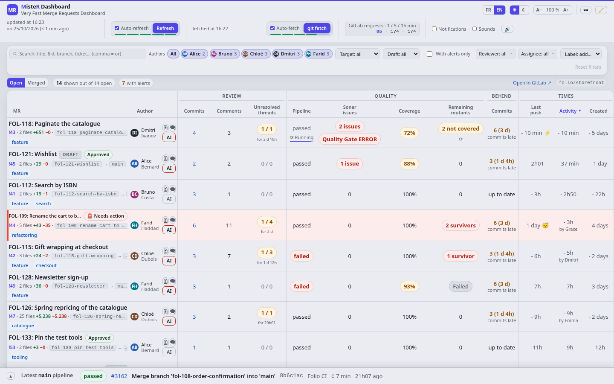
Hover the commit count: the commits pile up over time, with the reviewers' comments and the author's answers on the curve. Whether fixes follow the comments shows at a glance.
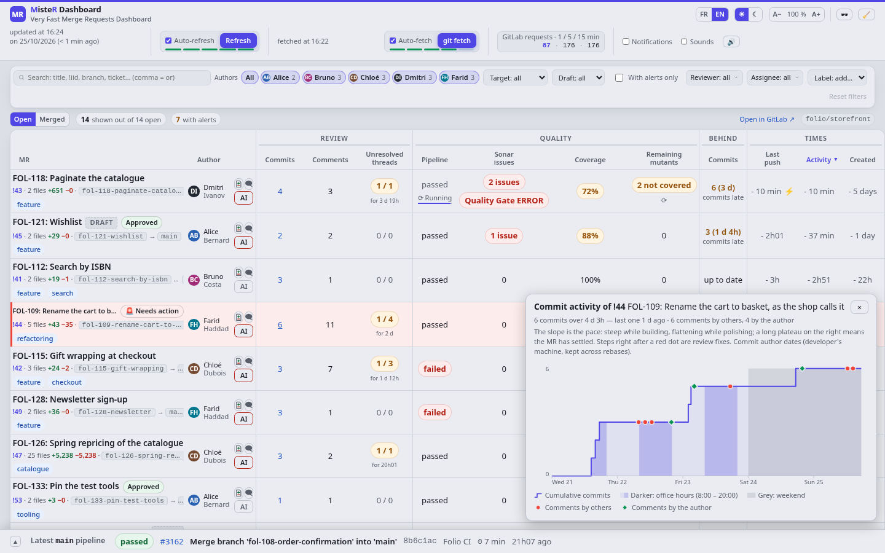
The commits grouped by push, the file list beside the code, renamed files, and the words that changed marked within each line.
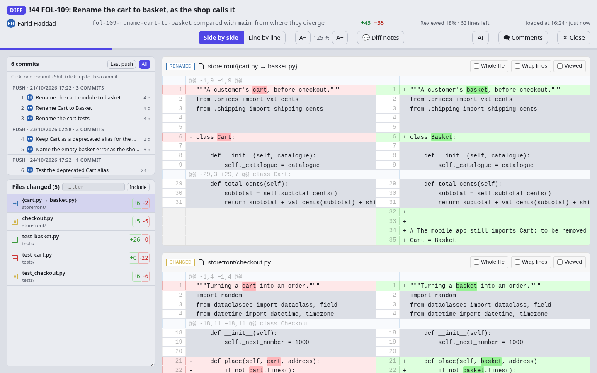
The threads sit on their lines, on either side, and the arrows go from one to the next. Reply, resolve or reopen without leaving the diff; quotes, code and lists show as in GitLab.
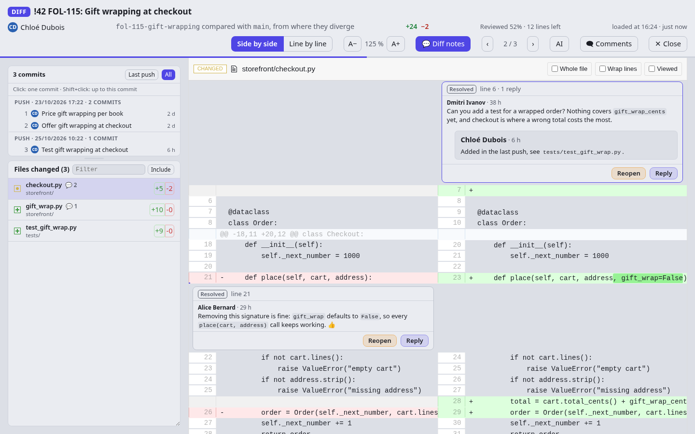
Twenty-five files and ten thousand changed lines: each file is highlighted as it comes into view, and a very large one waits for a click.
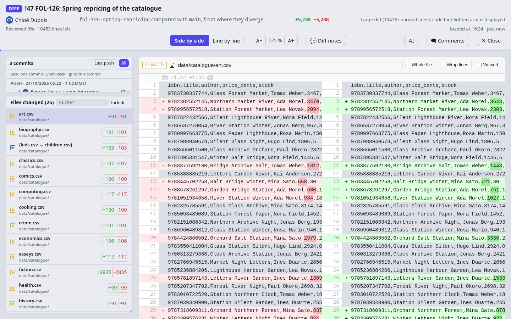
The merge request's comments as GitLab renders them, screenshots included, with a reply on each.
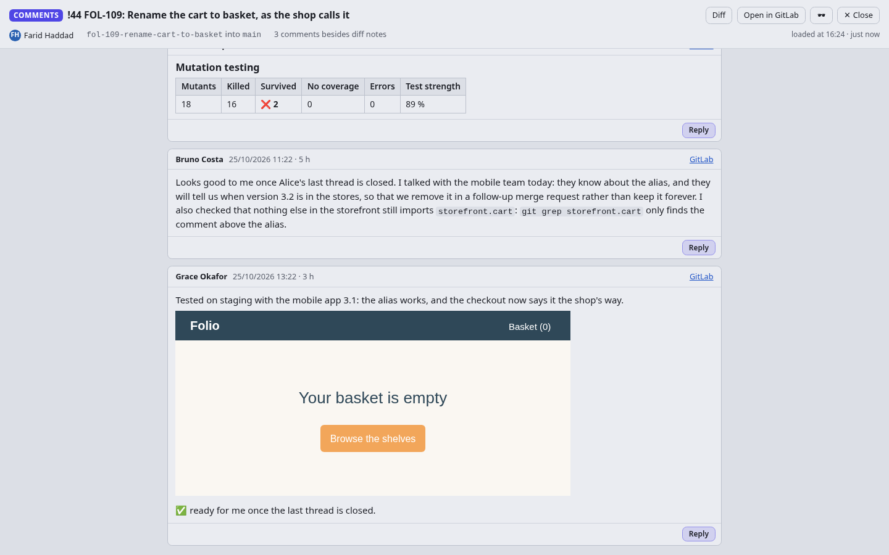
The AI button writes the prompt that fixes what is red, from the failed pipeline, the surviving mutants and the unresolved threads, or runs your project's own actions, such as a review.
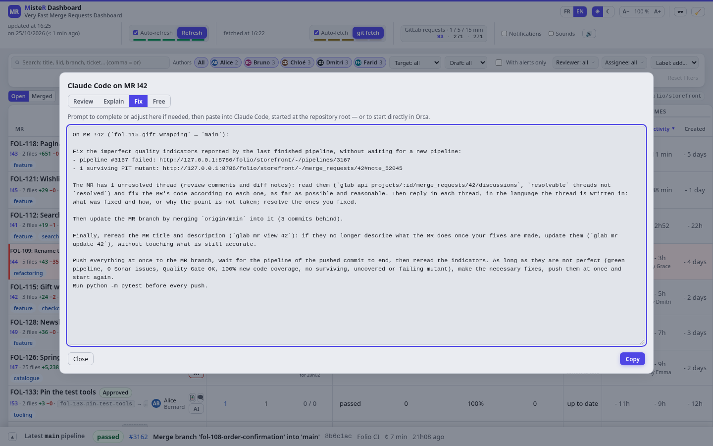
The latest pipeline of the main branch at the bottom, its stages and jobs, and its build times over the last builds.
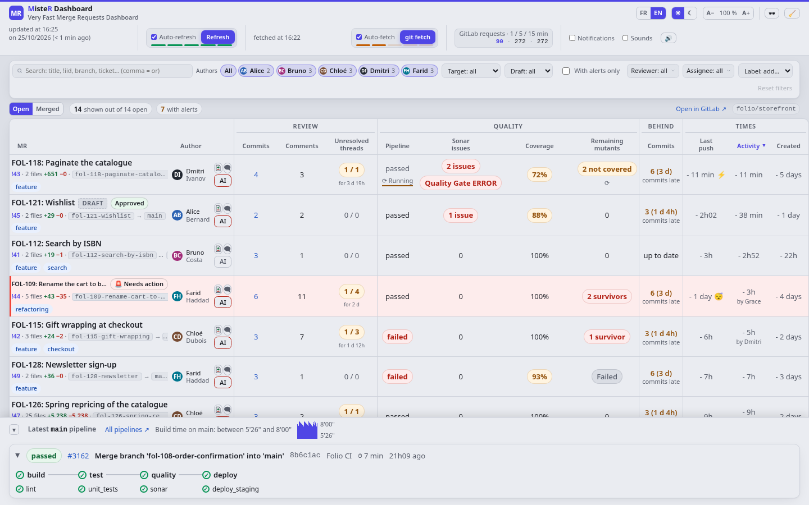
The merged ones, with the same review indicators and how long each took to develop, to stabilize and in total.
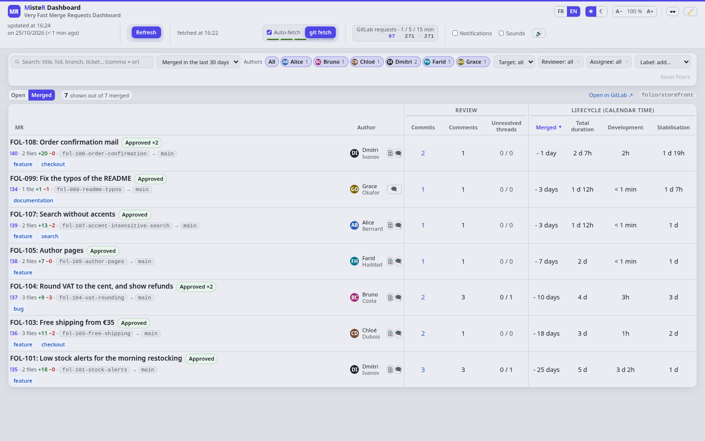
Every page comes in both themes; the browser remembers the choice.
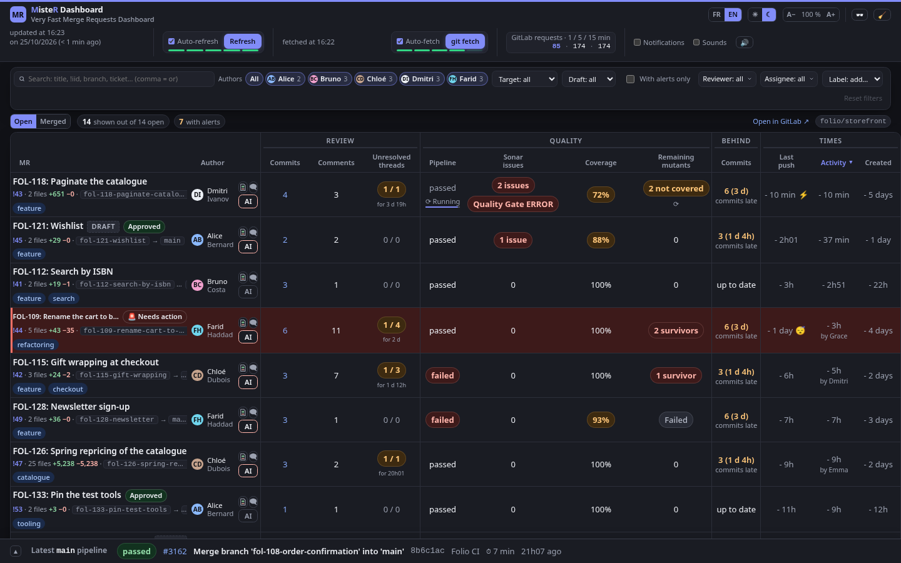
The same diff, in the dark theme.
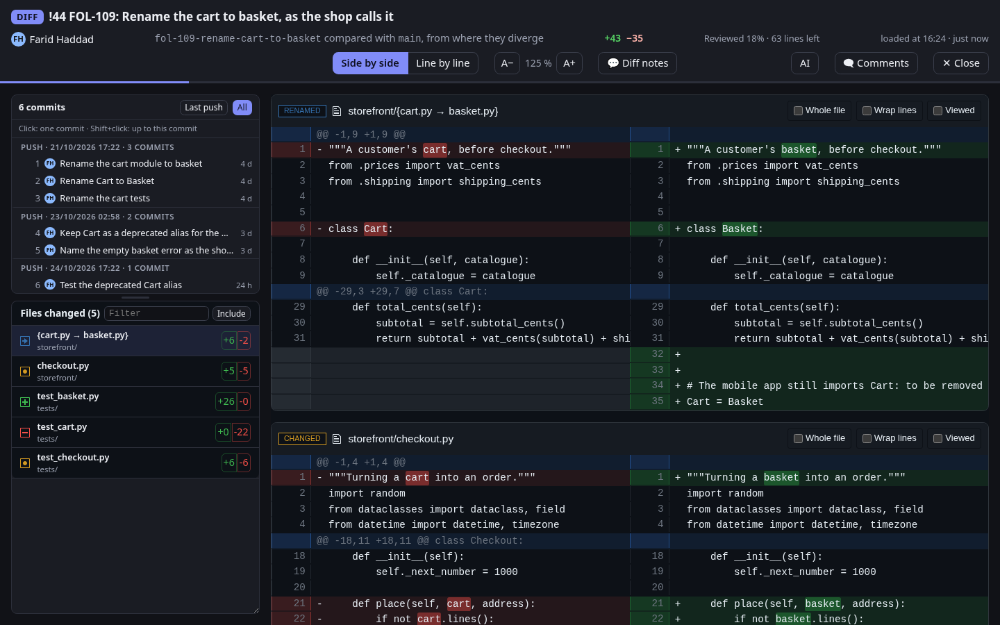